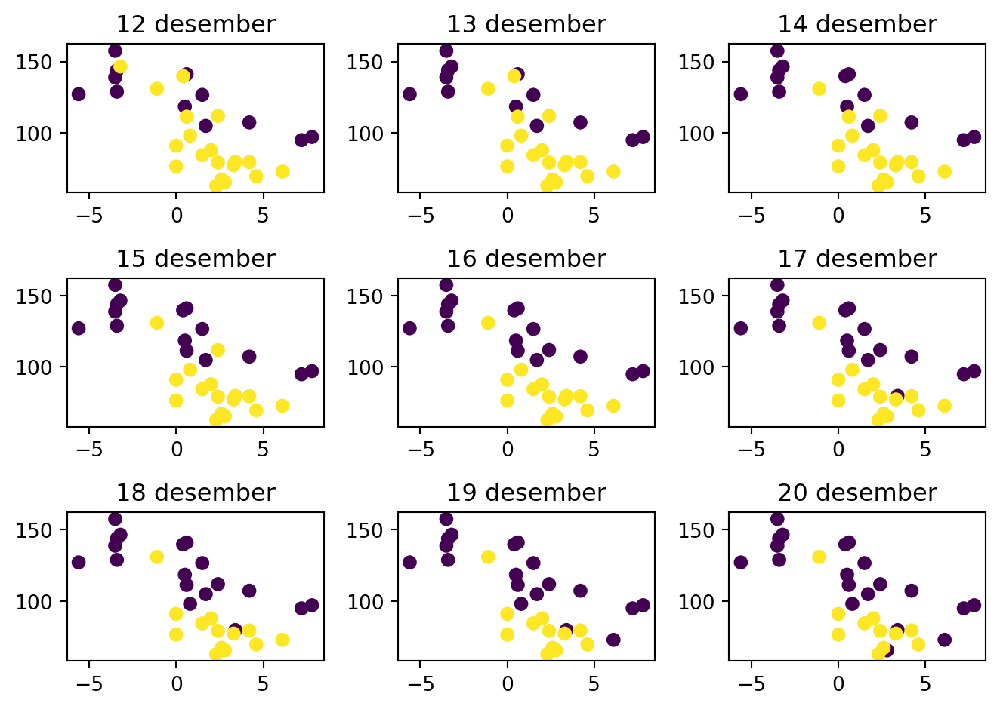
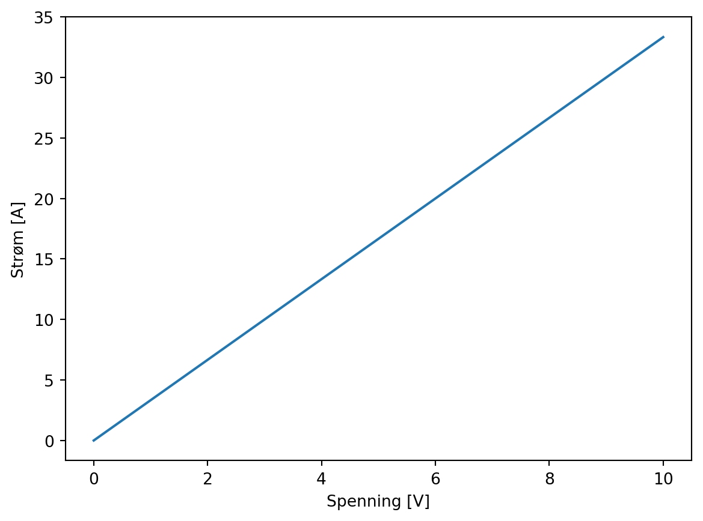
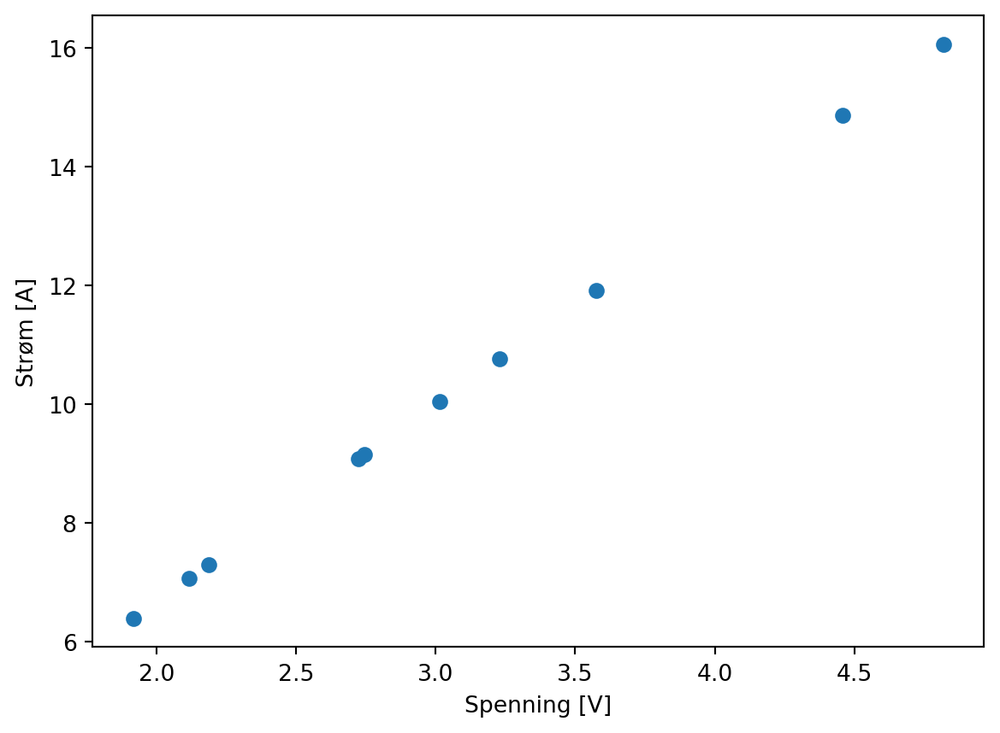
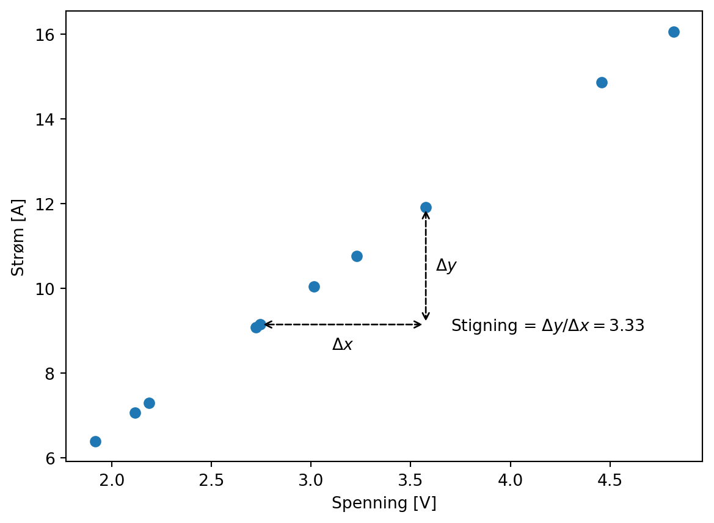
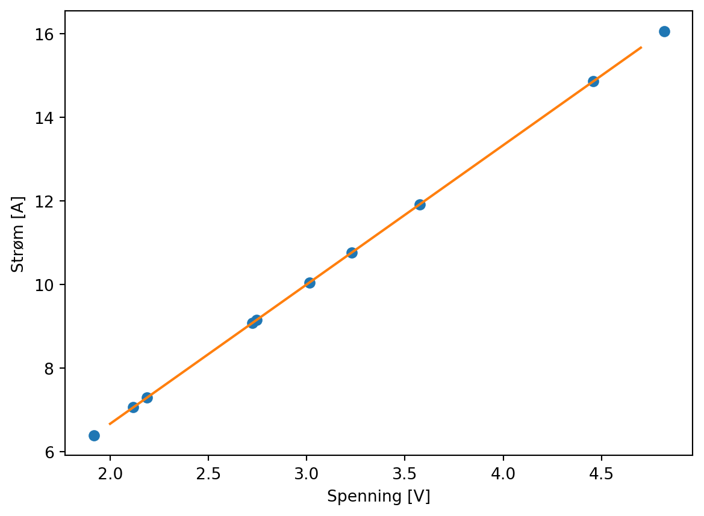
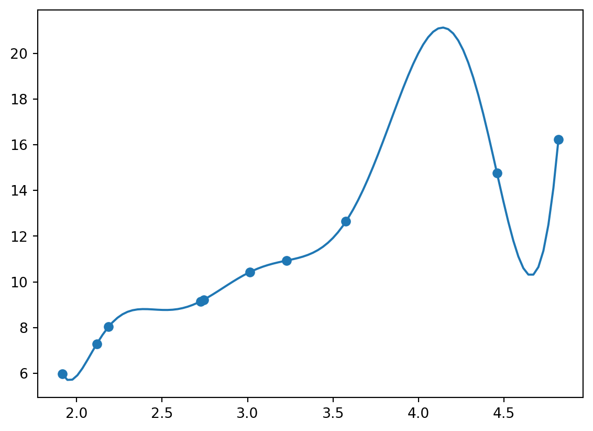
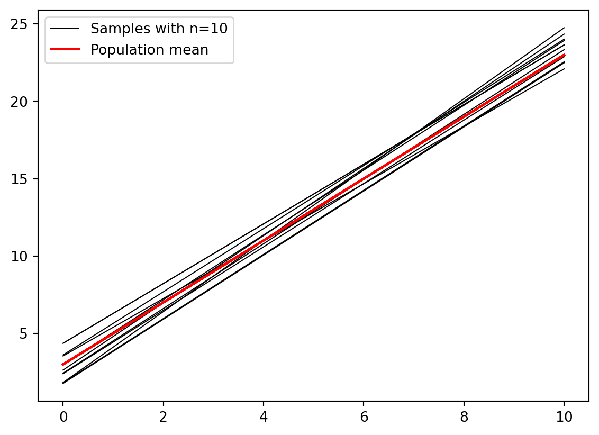
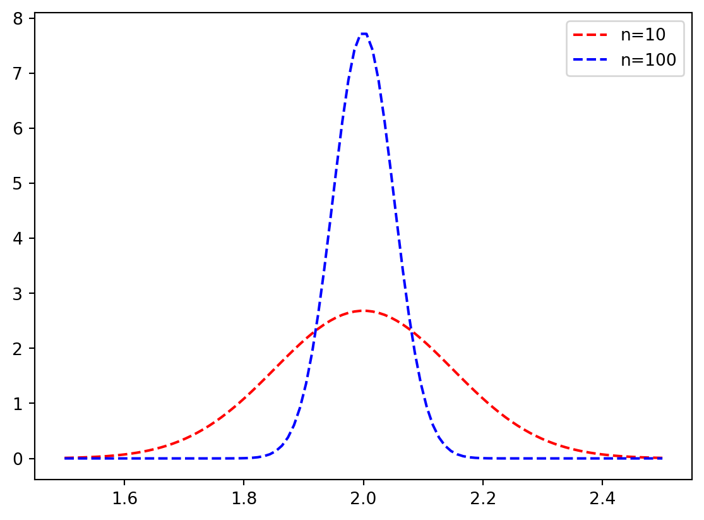
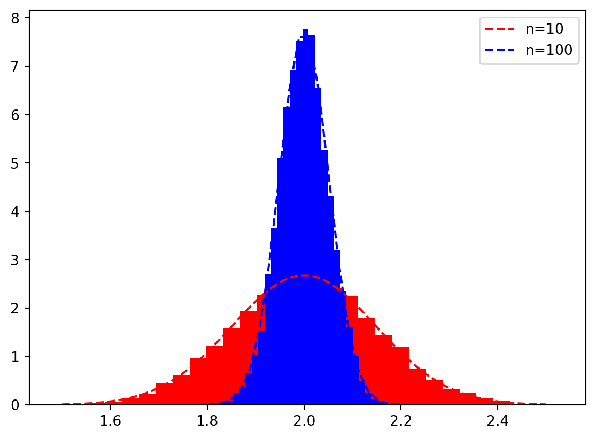

[1 2 3] int64Forelesningsnotat: Lineær regresjon og modellering
Henrik Sveinsson
Forrige uke
- Tenke litt på data-drevne prosjekter
- Repetisjonsoppgaver fra tidligere programmeringskurs
- Er det spørsmål fra repetisjonsoppgavene?
I dag
Hvordan kan vi lære noe av et datasett?
- Grunnleggende numpy, pandas og plotting
- Lineær regresjon
- Estimere feilen i estimerte parametre
Husk
Ikke alt dekkes i forelesninger. Noe er bare i boka
Numpy
Pandas
Pandas 2
Pandas 3
Vi kan gjøre mye med lite kode:
Pandas 3
Forrige ukes oppgaver
- Når ble varmepumpen installert?
- Og viktigst: Hvordan fant dere ut av det? Det krever litt kreativitet.
En skisse av en løsning
La oss anta at vi har lest inn prisdata fra nordpool og lagt dem i en csv-fil. Så begynner vi med prisen på strømmen.
import pandas as pd
df_pris = pd.read_csv("data/nordpool-dec-24.csv")
df_forbruk = pd.read_csv("data/meteringvalues-dec-2024.csv", sep=";", decimal=",")
nettopris = sum(df_forbruk['KWH 60 Forbruk']*df_pris["value"])/1000
med_moms = nettopris*1.25
print(f"Spotpris på strømmen inkl. moms er {med_moms:.2f} kr")Spotpris på strømmen inkl. moms er 2899.55 krHva med varmepumpa?
Først må vi ha værdata. Jeg antar vi har lagret det i en fil weather_blindern.json.
import json
with open("data/weather_blindern.json") as ifile:
json_content = json.load(ifile)
my_list = []
for data in json_content["data"]:
my_list += data["observations"]
df_temp = pd.DataFrame(my_list)
df_temp = df_temp[df_temp["timeOffset"] == "PT6H"]
print(df_temp.head()) elementId value unit \
1 mean(air_temperature P1D) 7.2 degC
3 mean(air_temperature P1D) 7.8 degC
5 mean(air_temperature P1D) 4.2 degC
7 mean(air_temperature P1D) -3.5 degC
9 mean(air_temperature P1D) -3.5 degC
level timeOffset \
1 {'levelType': 'height_above_ground', 'unit': '... PT6H
3 {'levelType': 'height_above_ground', 'unit': '... PT6H
5 {'levelType': 'height_above_ground', 'unit': '... PT6H
7 {'levelType': 'height_above_ground', 'unit': '... PT6H
9 {'levelType': 'height_above_ground', 'unit': '... PT6H
timeResolution timeSeriesId performanceCategory exposureCategory \
1 P1D 0 C 2
3 P1D 0 C 2
5 P1D 0 C 2
7 P1D 0 C 2
9 P1D 0 C 2
qualityCode
1 NaN
3 NaN
5 NaN
7 NaN
9 NaN Kjøre sammen dataene
from datetime import datetime
def date_func(row):
date_object = datetime.strptime(row["Fra"], "%d.%m.%Y %H:%M")
return date_object.date()
df_forbruk["date"] = df_forbruk.apply(date_func, axis=1)
forbruk_per_dag = df_forbruk.groupby("date").sum()
x = df_temp["value"]
y = forbruk_per_dag["KWH 60 Forbruk"]Plotte
Hva nå?
import numpy as np
dag_varmepumpe_alternativer = np.arange(12, 21)
for i, dag_varmepumpe in enumerate(dag_varmepumpe_alternativer):
plt.subplot(3,3, i+1)
forbruk_per_dag["is_varmepumpe"] = [0] * dag_varmepumpe+[1] * (31-dag_varmepumpe)
x = df_temp["value"]
y = forbruk_per_dag["KWH 60 Forbruk"]
plt.scatter(x, y, c=forbruk_per_dag["is_varmepumpe"])
plt.title(f"{dag_varmepumpe} desember")
plt.tight_layout()
Leseleksen
- Skriv opp tre konsepter du forstod, og tre konsepter du ikke forstod
Oppgave
- Skriv opp på tre forskjellige postit-lapper, konseptene du ikke forstod. Alle legger lappene sammen i en bunke. SÅ tar dere dem en og en og ser om dere kan få forklart dem på gruppa
- Etterpå oppsummerer vi litt i plenum
Ohms lov og lineær regresjon
Fra strøm i naturfag på vgs/ungdomsskolen vet vi at \[U = RI \implies I = \frac{1}{R}U\]
Kan plotte:

Måledata
Vi går på laben og finner en Ohmsk motstand, og måler, da forventer vi å finne noe slikt:

Finne stigningstallet

Siden stigningen er 3.33…, så er motstanden \(0.3 \Omega\).

Dermed kan vi plotte en linje sammen med datapunktene
Men er det slik måleserier ser ut i virkeligheten?
Støy
Vi får nok heller noe som ser slik ut:
Er dette en god ide?
import numpy as np
import matplotlib.pyplot as plt
np.random.seed(0)
R = 0.3
U = np.random.random(10) * 5
I = 1.0 / R * U + np.random.normal(0, 0.5, 10) # Current calculation
p = np.polyfit(U, I, 10)
x = np.linspace(np.min(U), np.max(U), 100)
plt.scatter(U, I)
plt.plot(x, np.polyval(p, x))
Lineær regresjon
Nå må vi forholde oss til verden slik den er. Det er alltid en viss usikkerhet vi ikke klarer å forklare uansett hvor god modell vi har. \[y=f(x) + \varepsilon\]
Der \(\varepsilon\) representeter en usikkerhet som vi ikke klarer å plukke opp med vår modell av fenomenet.
Lineær regresjon
Vi ønsker å finne parametre \(\beta_0\) og \(\beta_1\) i funksjonen \[\hat{f}(x) = \beta_1 x + \beta_0\]
Slik at når vi sier at \(\hat{y} = \hat{f}(x)\), så minimerer vi
\[\sum_{i=0}^N (y_i - \hat{y}_i)^2\]
Dette heter minste kvadraters lineær regresjon.
Lineær regresjon med numpy
Plotte sammen
Oppgave
Skriv opp for deg selv, hva som er sammenhengen mellom den rette linja og datapunktene her om vi har gjort lineær regresjon.
Prøve flere ganger
def f(x):
return 2*x + 3
N = 10
slopes = []
for i in range(N):
x = np.linspace(0, 10, 10)
y = f(x) + np.random.normal(0, 1.5, 10)
p = np.polyfit(x, y, 1)
slopes.append(p[0])
y_fit = np.polyval(p, x)
plt.plot(x, y_fit, linewidth=0.75, color="k")
plt.plot(x, f(x), color="r")
plt.plot(x, y_fit, linewidth=0.75, color="k", label="Samples with n=10")
plt.plot(x, f(x), color="r", label="Population mean")
plt.legend()
Trekke mange ganger
Oppgave
a) Lag deg en affin funsjon (f. eks \(f(x) = 2x + 3\)). Trekk 10 tilfeldige tall, beregn \(f(x) + \varepsilon\) der du setter inn et tilfeldig normalfordelt tall som \(\varepsilon\) med np.random.normal(...). Verifiser med et plott at ting fungerer som de skal
b) Gjør en lineærtilpasning med np.polyfit(x, y, 1). Plott lineærtilpasningen sammen med de litt spredte punktene dine.
c) Gjenta mange ganger (f. eks 10000 i en for-løkke), og lagre stigningstallet som estimeres for hver enkelt linje. Plott et histogram over stigningstallene, med plt.hist.
Løsningsforslag a og b
Løsningforslag c
Øke antallet punkter til 100
Hva skjedde med fordelingen av stigningstall?
Tolkning
Kort diskusjonsoppgave
a) Hva skjedde med fordelingen av stigningstall ved lineær regresjon da vi økte fra 10 til 100 punkter?
b) Hvordan skal vi tolke dette?
Feilestimat
Fra boka har vi følgende formel for forventet feil i stigningtallet: \[\mathrm{SE}(\hat{\beta}_1) = \sqrt{\frac{\sigma^2}{\sum_{i=1}^n(x_i-\bar{x})^2}}\]
der \(\sigma\) er standardavviket til den tilfeldige variablen \(\varepsilon\) i \(y = f(x) + \varepsilon\)
Anvendt på våre tall
Vi trakk tilfeldige tall med \(\sigma=1.5\) og hhv. 10 og 100 jevnt fordelte tall fra 0 til 10. Altså:
x = np.linspace(0, 10, 10)
se = np.sqrt(1.5**2/np.sum((x-np.mean(x))**2))
print(f"Standard feil for n=10: {se}")
x = np.linspace(0, 10, 100)
se = np.sqrt(1.5**2/np.sum((x-np.mean(x))**2))
print(f"Standard feil for n=100: {se}")Standard feil for n=10: 0.1486301082920587
Standard feil for n=100: 0.051444481273168134Normalfordelinger med disse parametrene:
def est_dist(x, mu, std):
return 1/np.sqrt(2*np.pi*std**2)*np.exp(-(x-mu)**2/(2*std**2))
for n, color in zip([10, 100], ["red", "blue"]):
x = np.linspace(0, 10, n)
se = np.sqrt(1.5**2/np.sum((x-np.mean(x))**2))
est_vals = np.linspace(1.5, 2.5, 100)
plt.plot(est_vals, est_dist(2, est_vals, se), "--", color=color, label=f"n={n}")
plt.legend()
Normalfordelinger sammen med datasettene
def est_dist(x, mu, std):
return 1/np.sqrt(2*np.pi*std**2)*np.exp(-(x-mu)**2/(2*std**2))
N = 10000
for n, color in zip([10, 100], ["red", "blue"]):
slopes = []
for i in range(N):
x = np.linspace(0, 10, n)
y = f(x) + np.random.normal(0, 1.5, n)
p = np.polyfit(x, y, 1)
slopes.append(p[0])
_ = plt.hist(slopes, 30, color=color, density=True)
se = np.sqrt(1.5**2/np.sum((x-np.mean(x))**2))
est_vals = np.linspace(1.5, 2.5, 50)
plt.plot(est_vals, est_dist(2, est_vals, se), "--", color=color, label=f"n={n}")
plt.legend()
Men om vi har målt noe, så har vi jo bare én måleserie. Hva kan vi gjøre da?
Bootstrap: Sample deler av datasettet vårt mange ganger, for å se hvordan regresjonskoeffisiente varierer.